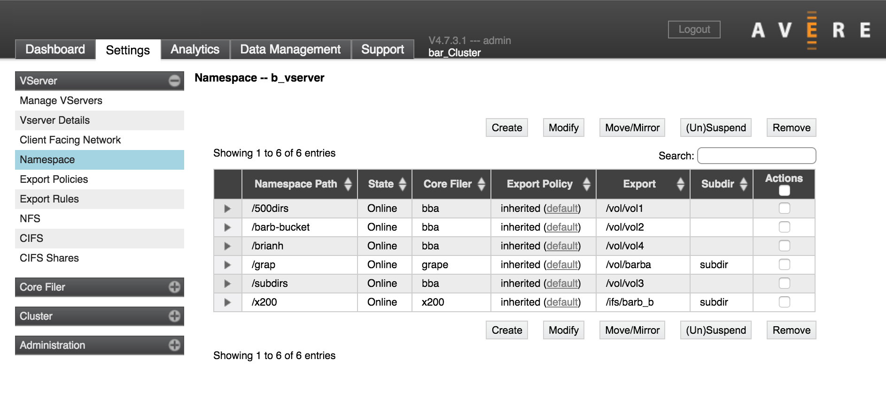
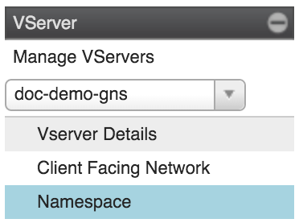
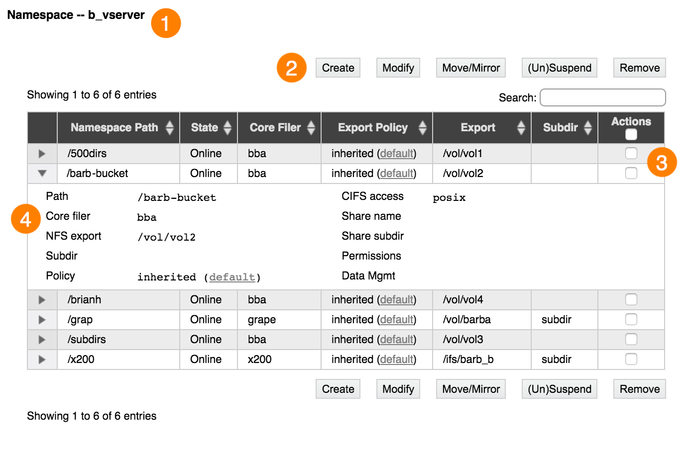
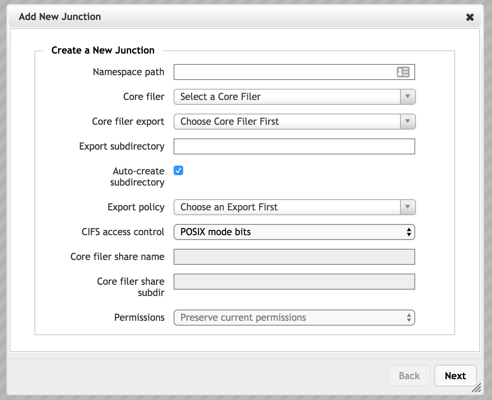
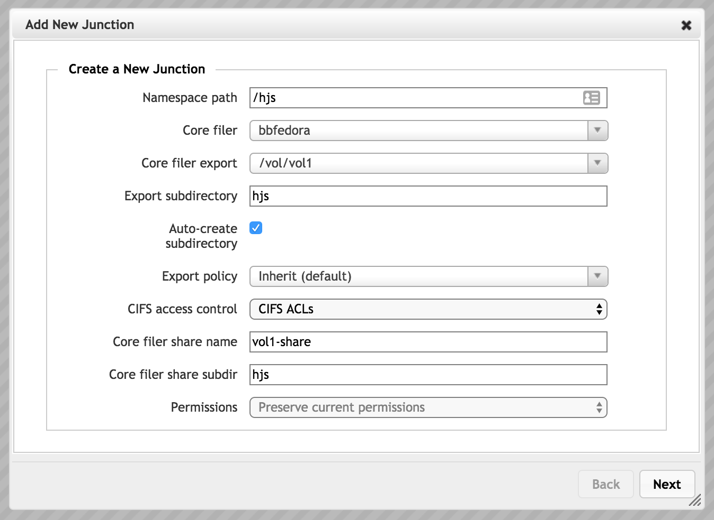
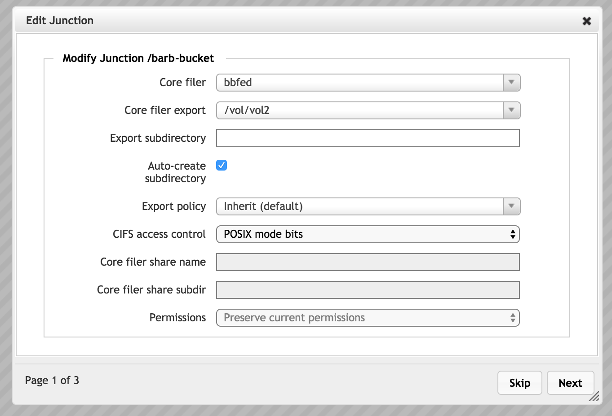
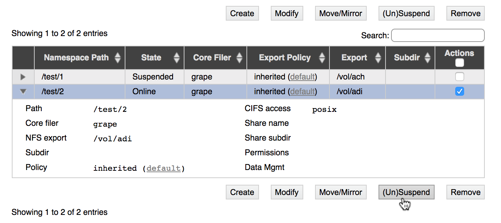
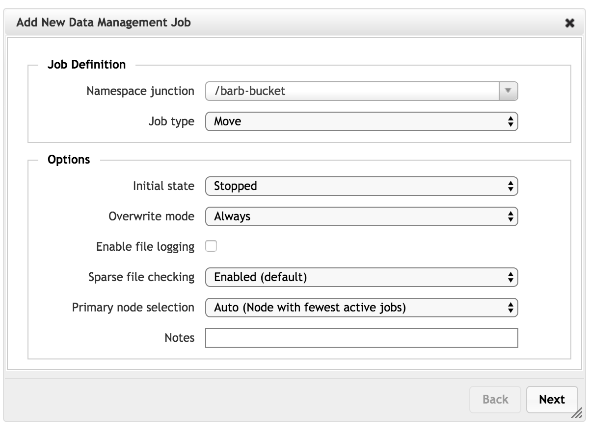

VServer > Namespace
The Namespace settings page is used to configure junctions, which map the client-visible namespace to the back-end storage filesystem.
Junctions are part of creating a global namespace (GNS), sometimes called a pseudo-filesystem. Read Using a Global Namespace for information about designing your GNS and setting up the infrastructure necessary to support namespace mapping.
If your cluster has more than one vserver, use the selector in the sidebar to choose which vserver to show.
{kind=link}
The table lists existing junctions for the selected vserver (1).
{kind=link}
You can sort the table by any column heading. Click the triangular control in the left column to show or hide junction details (4).
Us the Actions checkboxes (3) to select one or more junctions, then use the action buttons (2) to act on the selected junctions. (If you are creating a junction, it doesn’t matter if any of the boxes are checked.)
The buttons allow you to do the following:
- Create a new junction
- Edit a junction (Modify button)
- Start a new FlashMove® or FlashMirror® data migration job from the junction (Move/Mirror button, requires a data migration feature license)
- Suspend a junction, or unsuspend a junction that was previously suspended.
- Delete a junction (Remove button)
Click the links in the list above to skip to the sections below with details about each of these tasks.
Using Junctions with Cloud Storage
Because cloud storage is structured differently from NAS storage, creating junctions for cloud core filers is somewhat different from creating junctions for conventional NFS network-attached storage systems.
Differences between NAS and Cloud Storage Exports
Network-attached hardware storage and cloud storage are fundamentally different. NAS storage uses a hierarchical filesystem structure to store data in directories and files. Cloud storage uses an object storage approach that stores data in a flat filesystem and relies on object metadata to locate files.
On a NAS core filer, an administrator defines externally visible exports by using the core filer’s operating system. The export paths correspond to actual NFS filesystem paths on the core filer. Avere OS reads the exports defined in the core filer’s operating system to provide options for creating junctions.
On a cloud core filer, only one export (/) is available to the Avere system. This export corresponds to the cloud bucket that contains all of the stored objects in a flat filesystem. However, with Avere OS you can use the global namespace feature to create virtual subdirectories, as described below.
Creating Virtual Subdirectories for Cloud Storage
To provide more flexibility to clients accessing cloud storage through an Avere cluster, Avere OS allows administrators to create a hierarchical pseudofilesystem in the GNS. That is, you can create subdirectories in global namespace junctions that do not actually exist on the cloud core filer. When creating a junction to cloud storage, you can use both the Namespace path and the Export subdirectory fields to customize the virtual filesystem. The Avere cluster treats these paths as if they were actual paths on a hardware core filer.
Avere OS also allows you to set different access permissions (export policies) on the virtual subdirectories, giving you the ability to protect sets of files on the cloud core filer from open access. This feature gives administrators the ability to expose subsets of files stored in a cloud object store without providing access to the entire exported container. Use the Junction Export Policy setting to configure access to virtual subdirectories. (Read Controlling Access to Core Filer Exports to learn more about export policies.)
Creating A Junction
Before creating a new junction, make sure that you know the two paths that you want to connect:
- The path to access on the back-end filesystem (if it is a NAS storage system)
- The user-facing path that you want to map to the back-end directory
If SMB (CIFS) will be used for this junction, you also must know the name of the SMB share for the core filer export or subdirectory. Additional requirements are described in the SMB access control step.
Make sure that the vserver where you want to create the junction is selected in the sidebar.
Click the Create button.
In the Namespace Path field, enter the GNS path for the new junction. This path defines the virtual filesystem that clients see when they access this vserver.
Important
The value entered in this field must be an absolute path; that is, it must start at root (
/) of the global namespace (client-facing virtual filesystem) and work its way down.For example, to create a GNS user directory named
seamuswithin a top-level directory namedusr, enter the path/usr/seamusin this field.In the Core Filer list, choose the back-end storage system to use for this junction.
From the Core Filer Export drop-down list, choose the export that clients will access at the virtual directory in the Namespace Path field. For a NAS core filer, you can select an existing NFS export, but for a cloud bucket you must select
/.This setting works with the Export Subdirectory field to set the path exposed by the junction.
Avere Systems recommends specifying the export closest to the root of the core filer, and using the Export Subdirectory field to define the path to the subdirectory that you want clients to access from this junction. Although the end result is the same for client access, some tasks related to data migration and SMB access are more straightforward when a higher level export is used.
For example, imagine a core filer with the exports
/vol/dir1and/vol/dir1/subdir1.To create a junction that allows clients to access files in
/vol/dir1/subdir1/, you should select/vol/dir1/in the Core Filer Export list and entersubdir1in the Export Subdirectory field. This configuration is preferred over selecting the export/vol/dir1/subdir1and leaving the export subdirectory field blank.Important
Ensure that the core filer storage export has appropriate access policies in place, and will correctly allow or deny access to various clients and users. Refer to Controlling Access to Core Filer Exports and the VServer > Export Policies and VServer > Export Rules sections to learn more about configuring access.
{kind=link}
Optionally, in the Export Subdirectory field, enter the name of a subdirectory of the core filer export.
If you enter a value in this field, the namespace path will point to this subdirectory instead of to the core filer export directory. This value is relative to the core filer export path; do not enter a leading backslash (
/).If the subdirectory does not exist, the Avere OS software can create it. Make sure the Auto-create Subdirectory box is checked.
For a cloud core filer, this option creates a subdirectory in the global namespace filesystem only. No subdirectories are created in the cloud bucket.
Use the Export Policy menu if you want to customize the client access policy used for this junction. By default, a junction inherits the access policy that is set on its parent junction. Setting an explicit policy on the junction overrides the inherited access policy.
Note
This setting can be important for core filers that only provide one export, at the root of the filesystem (
/). Cloud core filers and some hardware solutions export only the root directory. The junction-level export policy feature allows administrators to create a virtual subdirectory in the global namespace for user access. You can assign more restrictive access permissions to that subdirectory and avoid exposing the core filer root export.If you do not customize the access policy for a virtual subdirectory, you must grant clients the access privileges they need on the root export so that the subdirectory can inherit the necessary privileges. This configuration gives clients access to every file stored on the core filer.
Configure SMB access control:
If this junction will be used for SMB (sometimes called CIFS), configure the junction’s SMB access control method.
(To enable SMB access for this vserver, use the VServer > CIFS and VServer > CIFS Shares pages.)
- From the CIFS access control drop-down list, choose the access control method to use for SMB clients on the junction. You must choose the method that is used on the core filer.
- Choose POSIX Mode Bits for UNIX-style filesystems.
- Choose CIFS ACLs for NTFS filesystems.
- For a cloud core filer, you can choose either POSIX or ACL security style. Make sure the options in the Permissions field are correctly set for the security style you choose.
(An NFSv4 ACL option appears in the menu, but selecting it is not recommended.)
Refer to Selecting an Access Control Method for SMB for information about SMB access-control mechanisms.
- If you chose CIFS ACLs and your core filer is a NAS system, you must specify an existing SMB share on the back-end core filer. ACL communication takes place between the SMB share on the vserver and the SMB share on the core filer. Enter the name in the Core Filer Share Name field.
Note
The SMB share should reference the exact same directory that was selected in the Core Filer Export setting. If the SMB share is for a different directory (for example, a subdirectory of the export), creating a FlashMove or FlashMirror job can fail.
If you used an export subdirectory, enter the same value in the Core Filer Share Subdir field. Do not enter a leading backslash (
/). The system combines the core filer share name and core filer subdirectory to create the SMB path for this junction.
{kind=link}
- Click the Next button to submit the changes.
Repeat this procedure until all required exports on all core filers are available on the desired namespace paths.
Modifying Junctions
To modify an existing junction:
Select the vserver containing the junctions that you want to change.
In the table of junctions at the top of the page, identify the junctions that you want to change. Click the checkbox in each junction’s row, then click the Modify button at the top of the table. You can select one junction or multiple junctions.
The Modify Junction dialog appears.
Make changes in the junction settings in the same way as when adding a junction. Refer to Creating A Junction, above, for details.
If you selected multiple junctions, use the Next button to save this configuration and move to the next one. Page numbers at the lower left of the dialog show how many junctions are open for changes.
The Skip button moves to the next junction’s page without saving changes on the current page. There is no way to return to a previous page; after saving the last change, you can re-select and modify any junction.
After making changes, click Next to save the settings and close the dialog.
{kind=link}
Suspending a Junction
The Suspend feature lets you disable a junction without permanently removing it. This feature allows you to prevent access to a directory or an export without causing failures in the cluster.
Core filers and vservers also can be suspended.
The (Un)Suspend button toggles the state of the junction between active (online) and suspended (offline). Select one or more junctions by clicking the box in the Actions column. If you select an online junction, clicking the (Un)Suspend button will disable it; if you select a suspended junction, clicking the (Un)Suspend button will make it active.
You can change the state of active and suspended junctions at the same time.
{kind=link}
Deleting a Junction
Deleting a junction removes the user-space pointer to the core filer volume. It does not remove any directories or files on the core filer.
Deleting a junction does not discard any changes stored in the Avere cluster cache. Any changes to the junction’s data are written to the core filer even if the junction is removed.
To delete a junction, select it in the Actions column and click the Remove button.
A pop-up window appears, asking if you are sure you want to delete the junction. Choose OK to permanently remove the junction.
A message confirms that the junction has been deleted.
Creating a New Data Migration Job From a Junction
If your system has licenses for FlashMove or FlashMirror, you can create a new data management job from a junction directly from the Namespace page.
Read Using the Avere Cluster To Move or Mirror Data for complete information about the data management capabilities in Avere OS.
Select the junction that will be the data source for your FlashMove or FlashMirror job by clicking its Actions checkbox.
- If you want to use a subdirectory of the junction as the data source, you must use a custom source definition instead of selecting a junction; you can change the setting in the New Data Management Job wizard.
- You can create only one data management job, from one junction, at a time.
Click the Move/Mirror button above the junctions table.
The Avere Control Panel opens the Add New Data Management Job wizard with the junction pre-selected as the data source. The system automatically switches to the Data Management page.
Complete the settings in the wizard and click Add Job to create the FlashMove or FlashMirror job.
Read Creating a New FlashMove or FlashMirror Job for help specifying the details.
{kind=link}
Note
Data management features like FlashMove and FlashMirror are licensed separately from the main Avere OS software. If your system does not have a valid license installed, an error message appears when the Move/Mirror button is clicked. Contact your Avere Systems representative for more information.